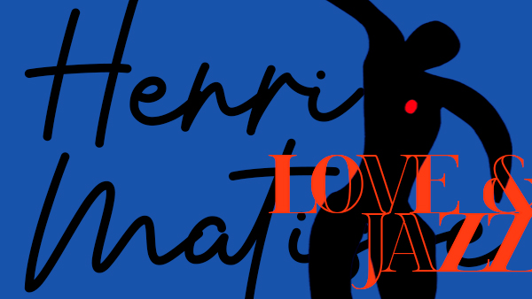

ABOUT
SKILL
PROJECT
CONTACT
menu
ABOUT
Simple is Best
Kim dong Hyun (2001.01.04)
EDUCATION
20.03 ~ 26.02 한라대학교 IT 소프트웨어학과 졸업
25.07 ~ 26.01 클라우드(AWS)활용 자바/스프링 개발 부트캠프 수료
CONTACT
SKILL
Java
Java
Programing
객체지향
파일 입출력
JDBC
Html
HTML5
웹페이지 구조 설계
시맨틱 태그
Css
CSS3
웹페이지 레이아웃 설계
웹페이지 디자인
반응형 제작
Js
JavaScript
DOM 조작, 제어
이벤트 처리
비동기 통신
React
React JS
SPA 개발
전역 상태 관리
클라이언트 라우팅
CSR 방식 앱개발
PROJECT
프로젝트명
주요 기능 :
주요 기능 설명
적용 기술 :
HTML, CSS, JS, React, Java, Spring Boot
GitHub :
깃허브 주소
URL :
배포 주소
README
이미지

프로젝트명
주요 기능 :
주요 기능 설명
적용 기술 :
HTML, CSS, JS, React, Java, Spring Boot
GitHub :
깃허브 주소
URL :
배포 주소
README
이미지
CONTACT
github.com/geoblo
010-1234-5678
geoblo@naver.com
README
close
여기에 모달 내용이 들어갑니다.
이미지
close
arrow_upward